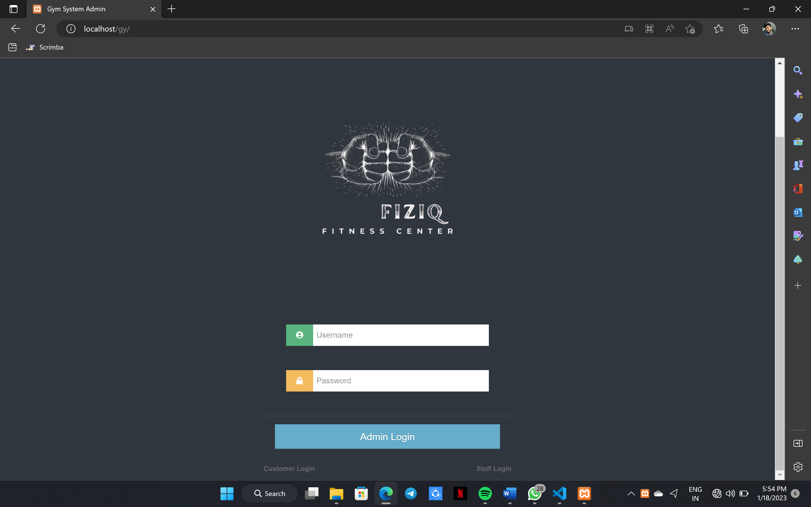
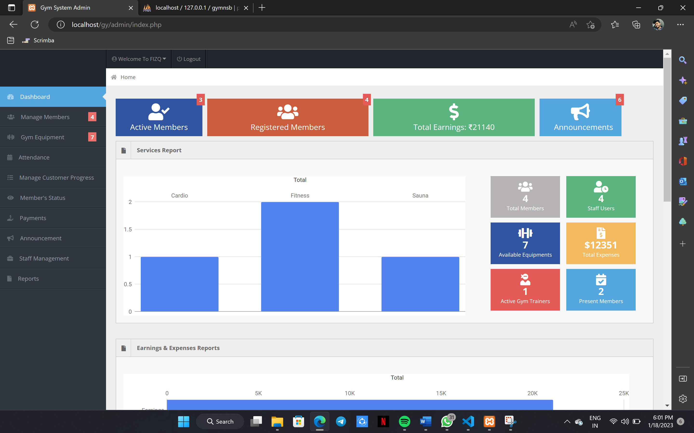
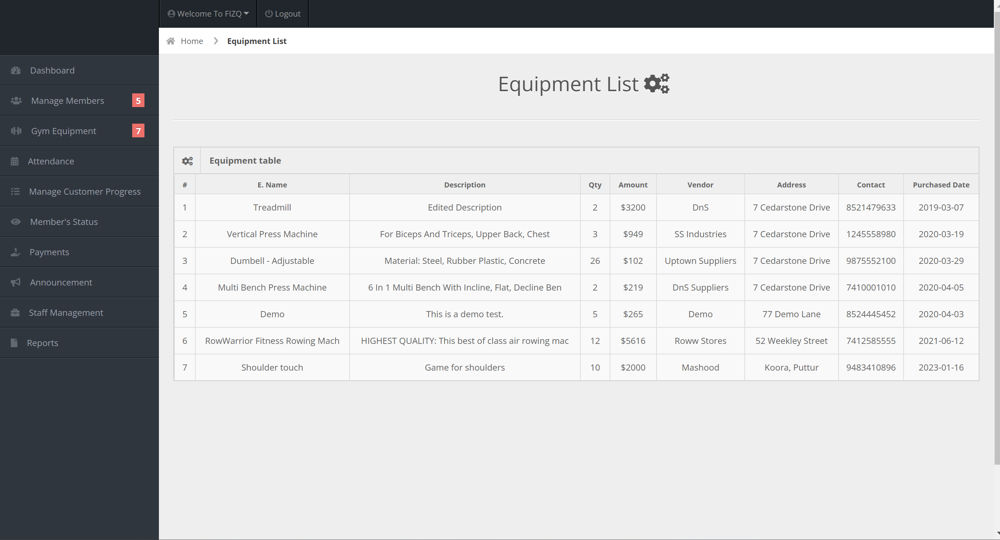
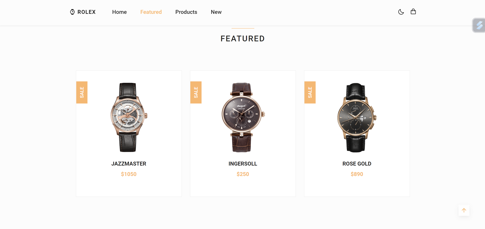
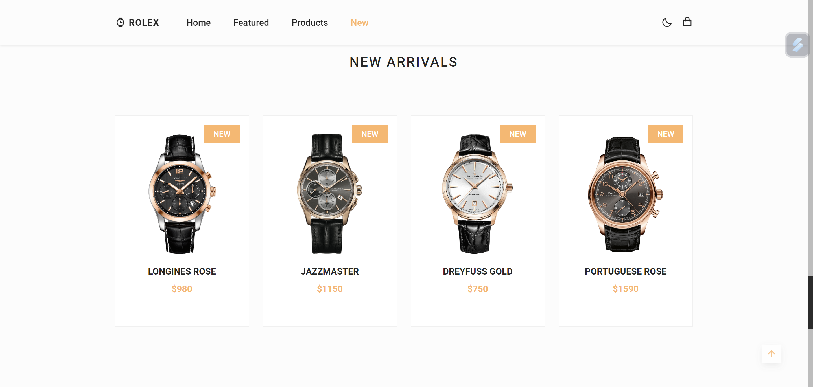

Software Engineer
Hello there! I'm a passionate final year Computer Science Engineering student with a strong inclination towards web development and software engineering.
Throughout my academic journey, I've delved into various programming languages and technologies, building a solid foundation in problem-solving and logical thinking. My love for coding and creating practical solutions led me to explore web development, where I've honed my skills in HTML, CSS, and JavaScript.
As a detail-oriented learner, I'm constantly seeking opportunities to expand my knowledge and stay up-to-date with the latest industry trends. My dedication to lifelong learning drives me to tackle challenges head-on and to find innovative ways to approach problems.
Degree: Bachelor of Engineering in Computer Science
Graduation Year: 2024
PUC: PCMC
Graduation Year: 2020
HIGH SCHOOL
Graduation Year: 2018
The Gym Management System is a sophisticated web-based application developed using PHP, DBMS, HTML, and CSS to streamline and enhance the operations of fitness centers and gyms. This project focuses on efficient member management, attendance tracking, billing and payments, class scheduling, and staff administration. By leveraging modern technologies, including PHP for server-side scripting, HTML and CSS for the user interface, and a Database Management System (DBMS) for data storage, the Gym Management System delivers automation, improved member experiences, and data-driven insights. This software solution empowers gym owners and staff to manage their facilities seamlessly while providing members with convenient online registration, attendance monitoring, and secure payment processing.
  he Online Watch Store Project is a website designed using HTML and CSS that lets users browse and select watches online. It features an attractive layout with watch images, descriptions, and prices. Users can easily navigate through different watch categories and styles, making their shopping experience interactive and user-friendly watch categories and styles, making their shopping experience interactive and user-friendly The project's goal is to provide a virtual watch-shopping experience that's visually appealing and accessible across devices
 Email: mahammadansar03@gmail.com
Phone: +91 7338490213
Address: Mangalore,Karnataka
LinkedIn: https://www.linkedin.com/in/mahammad-ansar-895271228/